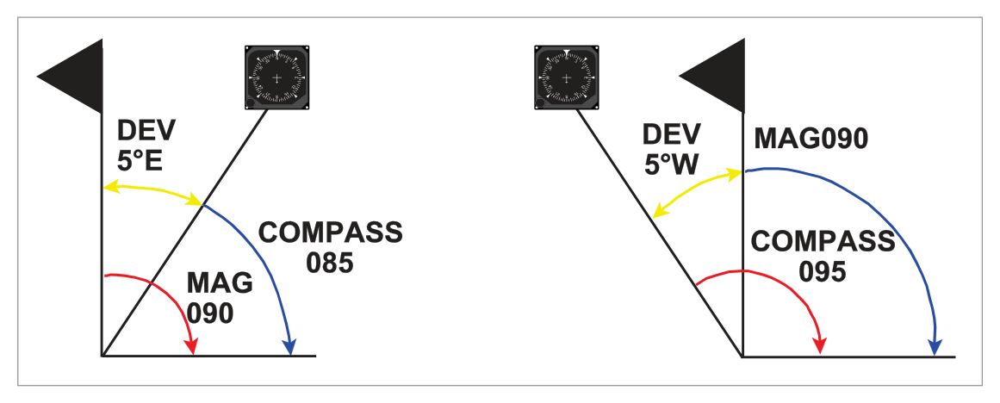
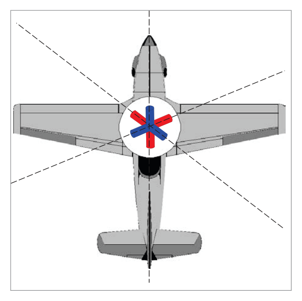
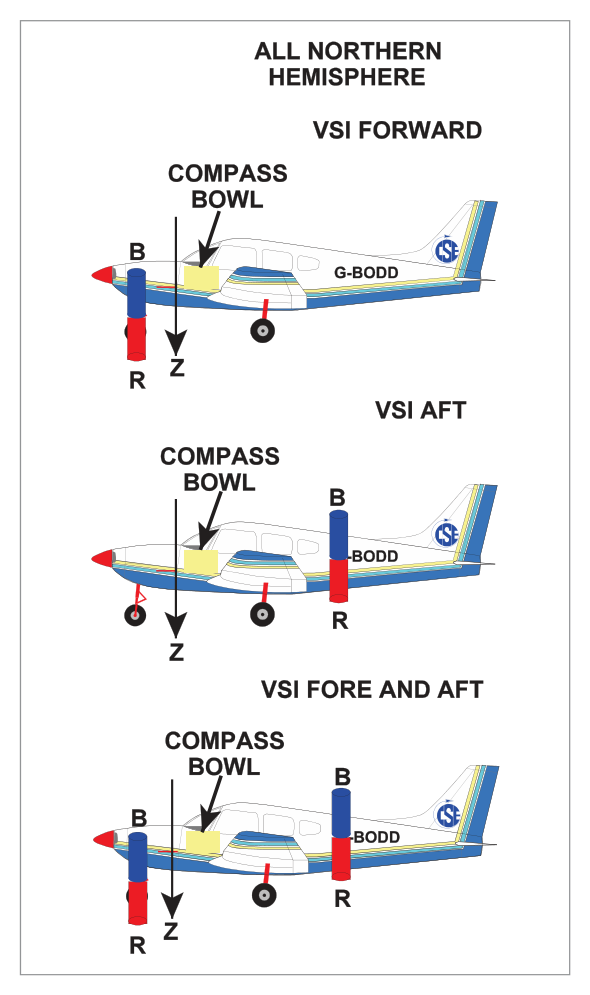
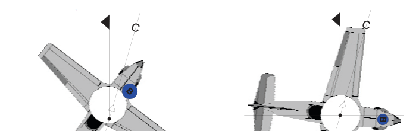
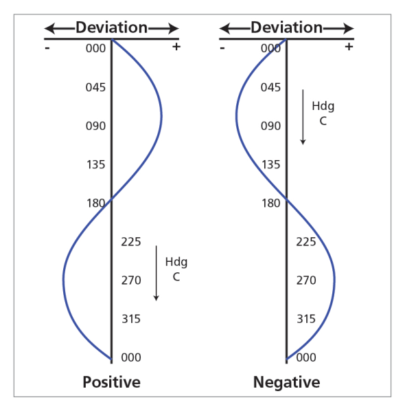
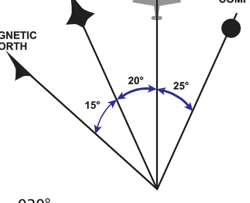

What this section covers: Definition of deviation; east/west naming; mnemonic for compass vs. magnetic heading.
Deviation is the angular difference measured between the direction taken up by a compass needle and the magnetic meridian, caused by the aircraft's own internal magnetism deflecting the needle.
Deviation is named easterly or westerly depending on whether the north-seeking end of the compass needle lies to the east or west of the magnetic meridian.
Deviation
Compass Heading (C)
Sign
Magnetic Heading (M)
Mnemonic
West
095
−5
090
Deviation West, Compass Best
East
090
+5
095
Deviation East, Compass Least
M = C + Deviation (east positive, west negative)
Or equivalently: C = M − Deviation

Fig 16.1 — Deviation illustration: compass heading vs. magnetic heading. Source p.202
2. Compass Swing — Purpose and Procedure
What this section covers: What a compass swing achieves; the three aims; where it is conducted.
A compass swing is the basic method of determining deviation by comparing the aircraft's heading compass reading with magnetic heading as defined by a high quality 'land or datum' compass, carried out in an area specifically selected for this purpose.
Three Aims of a Compass Swing:
To observe/determine the deviations/differences between magnetic north (landing compass) and compass north (aircraft compass) on a series of headings.
To correct/remove as much deviation as possible.
To record the residual deviation remaining after adjustment — producing a Compass Deviation Card placed near the compass.
The magnetic deviation observed during a compass swing is derived from hard iron and soft iron magnetism, resolved into two combined components (coefficients B and C).
3. Hard Iron Magnetism
What this section covers: Nature and properties of hard iron magnetism.
Hard iron magnetism consists of permanent magnets in the aircraft structure — parts that retain their magnetism independently of any external field. The total force at the compass position produced by hard iron magnetism can be resolved into three components (longitudinal, lateral, and vertical). These components are fixed for a given aircraft and do not change with change of heading.
Key Property of Hard Iron: The magnetic components due to hard iron are constant regardless of the aircraft's heading or latitude.
4. Soft Iron Magnetism (Vertical Soft Iron)
What this section covers: What soft iron magnetism is; how it varies with latitude; the role of the earth's vertical component Z.
Soft iron magnetism is induced in parts of the aircraft structure by surrounding fields — most importantly the earth's magnetic field. Unlike hard iron, soft iron magnetism changes with the surrounding field.
The earth's field has both a vertical component (Z) and a horizontal component (H). Within the examination syllabus, we consider primarily Vertical Soft Iron (VSI) magnetism, induced by component Z:
Z increases with latitude (as the earth's field dips more steeply) → VSI magnetism increases with latitude.
Z is zero at the equator → no VSI magnetism is induced at the equator.
VSI magnetism varies with magnetic latitude — but unlike hard iron, it is not fixed with heading.

Fig 16.2 — Hard iron and soft iron magnetic forces on the compass. Source p.203
5. Coefficients A, B, and C
What this section covers: What each coefficient represents and the pattern of deviation it produces.
The deviations observed during a compass swing are resolved into three coefficients:
Coefficient
Cause
Deviation Pattern
Effect
A
Mechanical misalignment of lubber line (or compass body)
Constant on all headings
Same deviation on all headings
B
Magnetic deviating forces along the fore-aft axis (e.g. blue pole in nose or tail)
Sine curve: max on E/W, zero on N/S
Blue pole in nose → max +E deviation on 090°, max W on 270°
C
Magnetic deviating forces along the lateral axis (e.g. pole to port/starboard)
Cosine curve: max on N/S, zero on E/W
Force resolved to right wing → positive cosine curve

Fig 16.4 — Blue pole in nose: deviation follows a positive sine curve (max easterly at 090°, max westerly at 270°). Source p.203–204

Fig 16.4 (cont.) — Effect of blue pole at various headings: 000°, 045°, 090°, 135°, 180°. Source p.204
Exam Tip — Sine vs. Cosine:
Coefficient B (fore-aft pole) → sine curve → zero deviation on N and S; max on E and W.
Coefficient C (lateral pole) → cosine curve → zero deviation on E and W; max on N and S.
6. Correction of Coefficients
What this section covers: How each coefficient is corrected during a compass swing.
Correction Method for Each Coefficient:
Coefficient A: A mechanical problem (displaced lubber line). Corrected by loosening the bolts holding the compass body (or detector unit in RIMC) and carefully turning it to align correctly.
Coefficient B: Corrected by adjusting compensating magnets on an easterly or westerly heading (where B deviation is maximum). Calculate the heading you wish the compass to read and adjust accordingly.
Coefficient C: Corrected by adjusting compensating magnets on a northerly or southerly heading (where C deviation is maximum). Similar calculation and sign application as for B.
After correction for B and C, a check swing is carried out using eight or twelve points of the compass to verify the work and derive the residual deviation for the Compass Deviation Card.

Residual deviations after compass swing — represented as a table, curve, or compass deviation card. Source p.204

Fig 16.x — Relationship between compass heading, magnetic heading, and true heading. Source p.208
7. Accuracy Limits
What this section covers: The regulatory maximum permissible deviations after correction.
REGULATORY LIMITS (CS OPS-1 / EU OPS-1):
Compass Type
Maximum Residual Deviation After Correction
Direct Reading Magnetic Compass (DRMC)
±10°
Remote Indicating Compass (RIMC)
±1°
8. Occasions for Swinging the Compass
What this section covers: All regulatory occasions requiring a compass swing.
A compass swing is required when:
Compass components are installed or replaced.
Whenever the accuracy of the compass is in doubt.
After a maintenance inspection if required by the schedule.
After a significant aircraft modification, repair or replacement involving magnetic material.
When carrying unusual ferromagnetic payloads.
When the compass has been subjected to significant shock.
If the aircraft has been struck by lightning.
After significant modification to aircraft radio/electrical systems.
After the aircraft has been given a new theatre of operations if the move involves a large change of magnetic latitude.
If the aircraft has been in long-term storage standing on one heading.
flowchart TD
SW[Compass Swing Required?] --> A[New/replaced\ncompass components?]
SW --> B[Accuracy\nin doubt?]
SW --> C[Maintenance\ninspection\nschedule?]
SW --> D[Magnetic material\nmodification/repair?]
SW --> E[Ferromagnetic\npayload?]
SW --> F[Significant\nshock or\nlightning strike?]
SW --> G[Radio/electrical\nsystem mods?]
SW --> H[New theatre:\nlarge latitude\nchange?]
SW --> I[Long-term storage\non one heading?]
A --> YES[YES → SWING]
B --> YES
C --> YES
D --> YES
E --> YES
F --> YES
G --> YES
H --> YES
I --> YES
Quick Revision Summary — Chapter 16:
Deviation = angle between compass needle and magnetic meridian. East = positive (+); West = negative (−).
Mnemonic: "Deviation West, Compass Best" (C > M). "Deviation East, Compass Least" (C < M).
Compass swing done at a dedicated compass swinging area using a landing/datum compass.
Three aims: Observe → Correct → Record residual (deviation card).
Hard iron: permanent magnetism, fixed with aircraft, not affected by heading or latitude.
Soft iron (VSI): induced by earth's field, varies with latitude (max at poles, zero at equator).
Q1.European regulations (EU OPS-1) state that the maximum permissible deviations after compensation are:
one degree for a remote indicating compass, and ten degrees for a direct reading magnetic compass
three degrees for a direct reading magnetic compass, and one degree for a remote indicating compass
ten degrees for a remote indicating compass, and one degree for a direct reading magnetic compass
one degree for a direct reading magnetic compass, and eleven degrees for a slaved compass
Correct Answer: (a) 1° for remote indicating compass; 10° for direct reading magnetic compass
Explanation: CS OPS-1 / EU OPS-1 specifies: DRMC = ±10° maximum residual deviation; RIMC = ±1° maximum residual deviation. See Section 7.
Why the other options are wrong:
(b) — Reverses the limits (3° for DRMC is wrong; it is 10°). And 1° for RIMC is correct but the DRMC value is wrong.
(c) — Reverses the instrument types. 10° applies to DRMC, not RIMC.
(d) — Neither figure is correct for a direct reading compass (should be 10°, not 1°), and 11° is not a regulatory value.
Instructor's Note: RIMC = 1° (very tight, because it is a precision instrument feeding autopilots and FMS). DRMC = 10° (larger tolerance for a simpler instrument). Easy mnemonic: "Remote = 1; Direct = 10."
Q2.Compass swings should be carried out:
on the apron
only on the compass swinging base or site
at the holding point
on the active runway
Correct Answer: (b) only on the compass swinging base or site
Explanation: The compass swing must be conducted in an area specifically selected for this purpose — the compass swinging base or site — which is chosen to be free from magnetic interference (underground cables, reinforcing, aircraft equipment). See Section 2.
Why the other options are wrong:
(a) — The apron has underground infrastructure (fuelling pipes, cables) that cause magnetic interference.
(c) — The holding point is on or near the runway, which has metallic reinforcing in the concrete/tarmac.
(d) — The runway itself is metallic reinforced concrete, highly unsuitable for compass swinging.
Instructor's Note: The compass swinging base is a specially prepared area on the airfield, away from hangars, pipelines, and other magnetic interference. The landing/datum compass used must also be calibrated and away from interference.
Q3.Aircraft magnetism caused by vertical soft iron:
varies with magnetic heading but not with magnetic latitude
varies with magnetic latitude but not with heading
is not affected by magnetic latitude or heading
varies as the cosine of the compass heading
Correct Answer: (b) varies with magnetic latitude but not with heading
Explanation: Vertical Soft Iron (VSI) magnetism is induced by the vertical component Z of the earth's field. Z increases with latitude (zero at equator, maximum at poles). So VSI magnetism varies with magnetic latitude. However, for a given latitude, the component Z is the same regardless of which way the aircraft is pointing — so VSI magnetism does not vary with heading. See Section 4.
Why the other options are wrong:
(a) — VSI does vary with latitude (not just heading). This is the opposite of correct.
(c) — VSI is absolutely affected by latitude (Z varies with latitude).
(d) — VSI does not vary as cosine of heading; it is a function of latitude, not heading.
Instructor's Note: Compare with hard iron (constant regardless of heading OR latitude) and soft iron (varies with latitude). This distinction is a frequent exam topic.
Q4.Aircraft magnetism caused by hard iron:
is not usually influenced by the earth's magnetic field
varies directly with magnetic latitude
varies indirectly with magnetic latitude
is maximum on east and west
Correct Answer: (a) is not usually influenced by the earth's magnetic field
Explanation: Hard iron magnetism is due to permanent magnets — parts of the aircraft that retain their magnetism independently. They are not induced by the earth's field and therefore are not influenced by changes in heading or latitude. Their magnetic force is constant and fixed with the aircraft. See Section 3.
Why the other options are wrong:
(b) and (c) — Varying with latitude (directly or indirectly) is a property of soft iron magnetism (specifically VSI), not hard iron.
(d) — "Maximum on east and west" describes Coefficient B deviation pattern (sine curve), not the nature of hard iron itself.
Instructor's Note: Hard iron = permanent, constant, not affected by external fields. Soft iron = induced, varies with the inducing field (earth's field). Clear contrast.
Q5.The aim of a compass swing is:
1. to find deviation on the cardinal headings and to calculate coefficients A, B and C
2. to eliminate or reduce the coefficients found
3. to record any residual deviation and to prepare a compass correction card
only answer 1 is correct
answers 1 and 3 are correct
answers 1, 2 and 3 are all correct
none of the above answers are correct
Correct Answer: (c) answers 1, 2, and 3 are all correct
Explanation: All three statements describe the complete three-step aim of a compass swing: observe and calculate (1), correct (2), and record residual (3). All three are correct. See Section 2.
Why the other options are wrong:
(a) — Incomplete; stops at observation only.
(b) — Incomplete; omits the correction step (2), which is the central purpose.
(d) — All three statements are correct.
Instructor's Note: Three steps: Observe → Correct → Record. All three are mandatory parts of a complete compass swing.
Q6.Deviation due to coefficient A is mainly caused by:
hard iron force acting along the longitudinal axis
hard and soft iron forces acting along the lateral axis
vertical soft iron forces
a misaligned lubber line
Correct Answer: (d) a misaligned lubber line
Explanation: Coefficient A is a constant deviation on all headings, mainly caused by a mechanical misalignment of the lubber line (or the compass body/detector unit is not correctly aligned with the fore-aft axis of the aircraft). See Section 5 and Section 6.
Why the other options are wrong:
(a) — Hard iron along the longitudinal axis causes Coefficient B (sine curve deviation).
(b) — Lateral forces cause Coefficient C (cosine curve deviation).
(c) — VSI causes deviation that varies with latitude — not a constant (Coefficient A) effect.
Instructor's Note: Coefficient A = mechanical, not magnetic. B = fore-aft magnetic (sine). C = lateral magnetic (cosine). A is corrected physically (rotate compass body), B and C magnetically (compensating magnets).
Q7.In the diagram below, the compass heading of the aircraft is ......., the magnetic heading ....... and the true heading .......
025° — 015° — 020°
335° — 035° — 020°
335° — 340° — 035°
025° — 015° — 340°
Correct Answer: (b) Compass 335°, Magnetic 035°, True 020°
Explanation: From the diagram (not reproduced here but standard format), three north indicators show compass north, magnetic north, and true north. The readings of each reference line against the aircraft heading indicator give the three heading values. The source confirms: C = 335°, M = 035°, T = 020°. See Section 1 for conversion between heading types.
Why the other options are wrong:
(a) — The C, M, T values are all reversed or incorrect based on the diagram geometry.
(c) — The compass and magnetic values are swapped.
(d) — The compass value (025°) and the true value (340°) do not match the expected deviation sequence in the diagram.
Instructor's Note: In heading diagrams, read each north reference against the aircraft's heading line. The compass north shows compass heading; magnetic north shows magnetic heading; true north shows true heading.